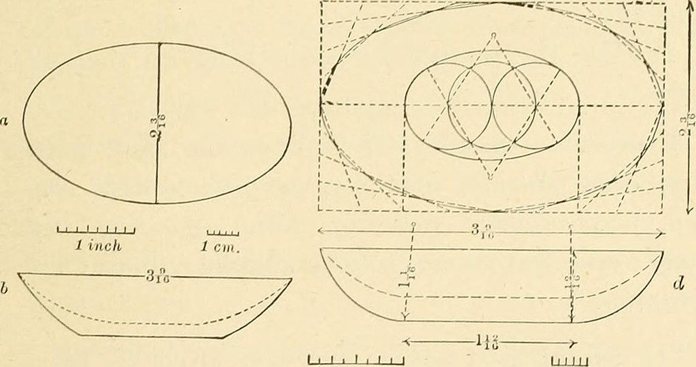
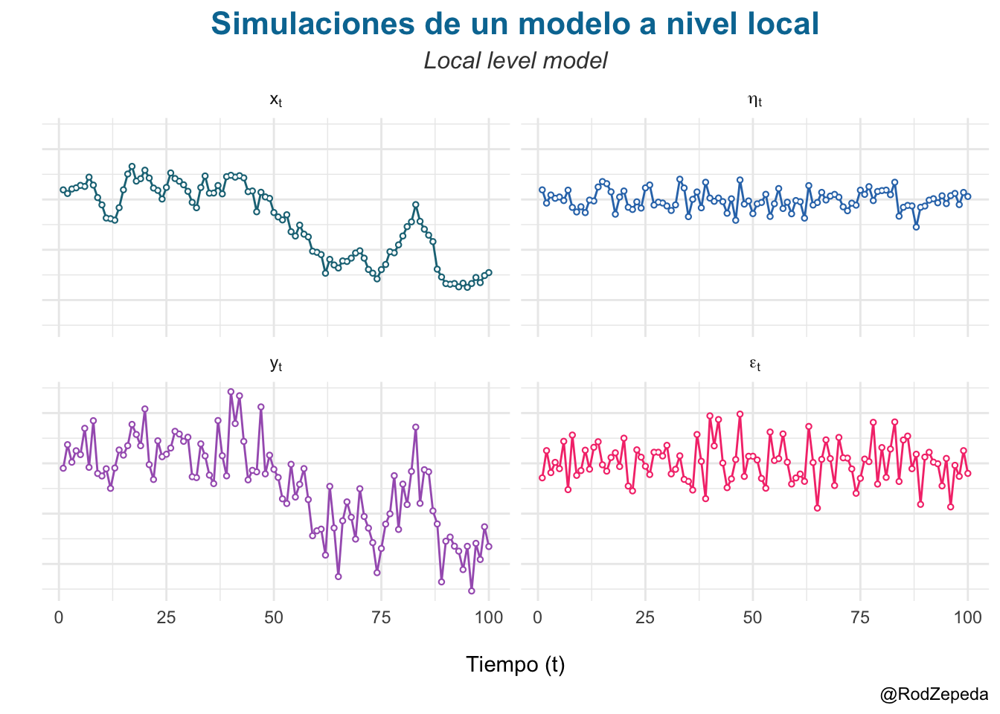

Modelos de Espacios de Estados

Última actualización 2022-11-06
Introducción
Un modelo de espacios de estados es un sistema que evoluciona con el tiempo compuesto por dos variables:
Una variable observada \(y_t\) que representa las mediciones realizadas al sistema al tiempo \(t\).
Una variable latente (o escondida) \(x_t\) que es la que en realidad lleva la dinámica.
A lo largo de estas notas consideraremos que el subíndice \(t\) es un número entero mayor o igual a cero (i.e. discreto).
Si, por ejemplo, desde tierra observamos un avión navegar entre las nubes \(y_t\) sería la posición del avión al tiempo \(t\) (desde nuestra perspectiva) y \(x_t\) sería la instrucción arrojada por el piloto que vuela el avión (al tiempo \(t\)). Al piloto \(x_t\) no lo vemos (latente) pero es quien en realidad controla la posición observada de la aeronave \(y_t\).
Una forma común de representar los modelos de espacios de estados es mediante gráficas acíclicas dirigidas (como en la Figura 1) donde podemos observar que en cada momento \(t\) la \(x_t\) depende sólo de su posición anterior (\(x_{t-1}\)). Éstas variables llevan la dinámica pues son las que evolucionan con el tiempo. Por otro lado, las variables observadas, \(y_t\), se originan por cada \(x_t\) y por tanto en el diagrama éstas son completamente explicadas por su \(x_t\) correspondiente.
![Diagrama de un modelo de espacios de estados. Comienza con un nodo x0 del lado izquierdo que se asocia con x1 mediante una flecha dirigida hacia éste. De x1 brotan dos flechas una hacia y1 en la parte inferior y una hacia x2 a su derecha. El proceso continúa hasta llegar a x subíndice t menos 1, x subíndice t y x subíndice t más 1 los cuales se conectan mediante flechas de izquierda a derecha partiendo de x subíndice t menos 1 rumbo a x subíndice t y de éste rumbo a x subíndice t más 1. Las y subíndice t (respectivamente subíndices t menos 1 y t más 1) están debajo de las x y se conectan con éstas mediante flechas que surgen de la respectiva x rumbo a la y correspondiente.](index_files/figure-html/fig-dag-space-state-1.png)
Un ejemplo específico de un modelo de espacios de estados (el modelo local lineal) ocurre cuando consideramos que las variables latentes \(x_t\) se generan a partir de la anterior (\(x_{t-1}\)) más un error aleatorio (i.e. forman una caminata aleatoria):
\[ x_{t} = x_{t-1} + \eta_t \text{ con } \eta_t \sim \text{Normal}(0,\sigma_{\eta}^2) \]
mientras que las \(y_t\) están dadas por la \(x_t\) más un segundo error aleatorio de medición con una distribución igualmente normal:
\[ y_t = x_t + \epsilon_t \text{ con } \epsilon_t \sim \text{Normal}(0,\sigma_{\epsilon}^2) \]
El sistema completo está dado por:
\[ \begin{align} x_t & = x_{t-1} + \eta_t \\ y_t & = x_t + \epsilon_t \end{align} \tag{1}\]
con \(\eta_t \sim \text{Normal}(0,\sigma_{\eta}^2)\) y \(\epsilon_t \sim \text{Normal}(0,\sigma_{\epsilon}^2)\).
Una simulación de este proceso está dado por la Figura 2:
Código
set.seed(475)
ntimes <- 100 #Número de simulaciones desde x0 hasta x_ntimes
xinit <- 0 #Valor inicial de x
sigma_eta <- 1 #Varianza de eta
sigma_eps <- 2.1 #Varianza de epsilon
xt <- rep(NA, ntimes + 1); xt[1] <- xinit
etat <- rep(NA, ntimes)
yt <- rep(NA, ntimes)
epst <- rep(NA, ntimes)
for (tval in 1:ntimes){
etat[tval] <- rnorm(1, mean = 0, sd = sigma_eta)
xt[tval + 1] <- xt[tval] + etat[tval]
epst[tval] <- rnorm(1, mean = 0, sd = sigma_eps)
yt[tval] <- xt[tval + 1] + epst[tval]
}
mynames <- c(`xt` = TeX("$x_t$"),
`etat` = TeX("$\\eta_t$"),
`yt` = TeX("$y_t$"),
`epst` = TeX("$\\epsilon_t$"))
#Realineación de x
tibble(
time = 1:ntimes,
xt = xt[2:(ntimes + 1)],
yt = yt,
epst = epst,
etat = etat,
) %>%
pivot_longer(cols = xt:etat) %>%
mutate(name = factor(name, levels = names(mynames),
labels = mynames, ordered = T)) %>%
ggplot() +
geom_line(aes(x = time, y = value, color = name)) +
geom_point(aes(x = time, y = value, color = name), size = 1) +
geom_point(aes(x = time, y = value), color = "white", size = 0.25) +
facet_wrap(~name, labeller = label_parsed) +
theme_minimal() +
theme(
legend.position = "none",
axis.text.y = element_blank(),
axis.ticks.y = element_blank(),
plot.title = element_text(size = 16, color = "#0077a1",
face = "bold", hjust = 0.5),
plot.subtitle = element_text(size = 12, face = "italic",
color = "gray25", hjust = 0.5)
) +
scale_color_manual("", values = c("#1b7385","#3076b8", "#a662bd","#f53d7a")) +
labs(
x = "\nTiempo (t)",
y = "",
title = "Simulaciones de un modelo a nivel local",
subtitle = "Local level model",
caption = "@RodZepeda"
) 
En general, la relación entre las variables observadas y latentes no tiene por qué ser lineal como en la ecuación 1 y podemos denotar un modelo de espacios de estados como:
\[ \begin{align} x_t & = f(x_{t-1}, \eta_t), \\ y_t & = h(x_t, \epsilon_t), \end{align} \tag{2}\]
con \(\eta_t\), \(\epsilon_t\) los correspondientes “ruidos” del sistema y de medición (\(\{\eta_t\}_{t\geq0}\) y \(\{\epsilon_t\}_{t\geq0}\) son colecciones de variables aleatorias mutuamente independientes). En general tanto \(f\) como \(h\) son desconocidas y no lineales.1
Propiedades probabilísticas
En términos de probabilidad el sistema propone un sistema markoviano (nota que \(x_t\) sólo depende de \(x_{t-1}\)) que puede escribirse como sigue:
\[ \begin{align} x_t & \sim p(x_{t}|x_{t-1}), \\ y_t & \sim p(y_t | x_t), \end{align} \tag{3}\]
con \(t\geq 1\). A \(p(x_{t}|x_{t-1})\) se le conoce como el modelo dinámico mientras que \(p(y_t | x_t)\) corresponde al modelo de medición. Por definición (y un poco por inspiración del diagrama) se cumple la propiedad de Markov (discreta) para los estados \(x_t\):
\[ p(x_t | x_{0:t−1}, y_{1:t−1}) = p(x_t | x_{t−1}), \tag{4}\]
así como la independencia condicional de las observaciones:
\[ p(y_t | x_{0:t}, y_{1:t−1}) = p(y_t | x_{t}). \tag{5}\]
En estas ecuaciones, la notación \(v_{t-k:t+\ell}\) para \(k,\ell\) números naturales representa un vector con entradas de la colección \(\{v_t\}_{t\geq 0}\) tomadas desde \(v_{t-k}\) hasta \(v_{t + \ell}\):
\[ x_{t-k:t+\ell} = (x_{t-k}, x_{t-k + 1}, \dots, x_{t + \ell - 1}, x_{t+ \ell})^T. \]
La distribución conjunta de los estados al momento \(T\) puede obtenerse fácilmente a partir de Markov (la ecuación 4):
\[ p(x_{0:T}) = p(x_0) \prod_{t = 1}^T p(x_t|x_{t-1}). \tag{6}\]
Mientras que la independencia condicional de las observaciones implica también un producto para el vector de estados \(y_{1:T}\):
\[ p(y_{1:T} | x_{0:T} ) = \prod\limits_{t = 1}^T p(y_t|x_t) \tag{7}\]
Una simple aplicación de bayes permite la estimación de los estados a partir de las observaciones y la combinación de la ecuación 6 y la ecuación 7:
\[ p(x_{0:T} | y_{1:T} ) \propto p(y_{1:T} | x_{0:T} ) \cdot p(x_{0:T}) \]
Hay tres distribuciones que son de importancia en el contexto de modelos de espacios de estados que pueden verse en la Tabla 1:
| Nombre | Distribución |
|---|---|
| Filtro | \(p(x_t|y_{1:t})\) |
| Suavizamiento | \(p(x_{t-\ell}|y_{1:t})\) con \(\ell \geq 0\) |
| Predicción | \(p(x_{t+\ell}|y_{1:t})\) con \(\ell \geq 1\) |
A continuación derivamos las distribuciones de cada uno de estos escenarios a partir de las propiedades de los modelos de espacios de estados.
Notas
Aún más general, tanto \(f\) como \(h\) podrían ser funciones que dependieran explícitamente del tiempo: \(x_t = f_t(x_{t-1}, \eta_t)\) y \(y_t = h_t(x_t,\epsilon_t)\). No consideraré este caso pues se puede trabajar con una variable \(x_t\) ampliada dada por \(x^{\circ}_t := (t, x_t)^T\)↩︎